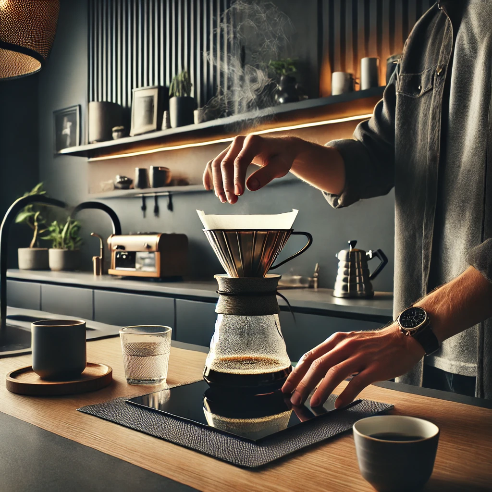

About Us
We practice transparent dialogue
We are committed to leaving a positive legacy for the communities where we operate and society in general. Discover what we are doing in pursuit of sustainable results and our actions in the areas of Environment, Social, and Governance (ESG).
There is our story, mate!
Our History
A brief history of the café with another random image.
Our café was established in 1998 with the goal of providing a cozy, warm environment for coffee lovers. We have a deep-rooted commitment to quality, using only the finest beans and ingredients in our offerings.
Our journey has been one of dedication, hard work, and a passion for coffee and community.